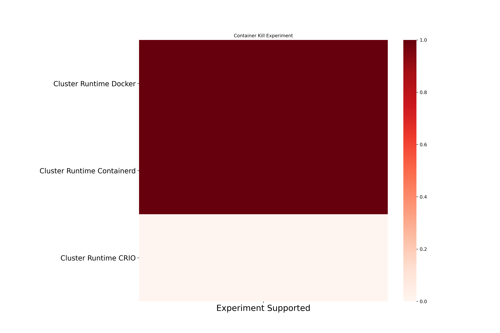
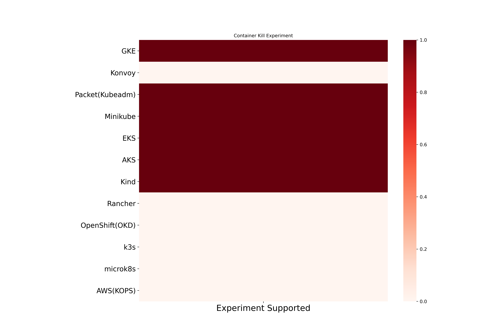

Container Kill Chaos
Container Kill containers in the application pod. Here are the different coverage metrics for the experiment.
Container Kill experiment based coverage
Container Kill cluster runtime based coverage

Container Kill platform based coverage
